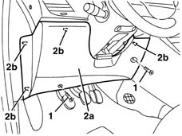

7040A30 Left instrument panel lower TRIM - R.R.
- Path
- Procedures > 70 FITTINGS > 7040 BODYSHELL INTERIOR TRIMS AND FITTINGS > 7040A passenger compartment trim > 7040A30 Left instrument panel lower TRIM - R.R.
- Kind
- repair procedure (removal / refitting; the operation number is the code)
- Applies to
- all engines; all production periods
- Interactive page
- https://sloeber94.github.io/elrnDB-lYpsln/en/#/2429579
Applies to: all engines; all production periods
 Removing
Removing
 Refitting
Refitting1. Unscrew the trim retaining bolts.
2. Remove the trim releasing the inner retainers.

Applies to: all engines; all production periods
Refitting
RemovingCheck that the cover is undamaged.
Position the trim, attach the retainers and tighten the bolts.
Topics that link to this page (40)
- 2125C20 gearbox manual control support and lever - r + r for checking and replacement if necessary
- 2125C22 gear lever and mount - r r
- 2125C28 gear control lever - r r
- 2125C30 gear engagement cable - r r
- 3330B02 pedal assembly - r r
- 3330B22 brake pedal - r+r manual gearbox versions
- 3330B26 clutch pedal - r+r
- 4110A22 Steering wheel position adjustment LEVER/KNOB - R.R.
- 4110A46 INTERMEDIATE SHAFT CONNECTED TO STEERING BOX - R.R.
- 4110D20 steering electrical control device - r r
- 4110D35 Electrically controlled steering CONTROL UNIT/MOTOR - R.R.
- 5010C22 Dynamic side air VENT in dashboard (one) left or right - R.R.
- 5010D27 upper mixed air temperature sensor (1), lh or rh - r r following electrical circuit check
- 5010D28 upper mixed air temperature sensor (1), lh or rh r r following electrical circuit check
- 5010D30 passenger compartment air temperature sensor - r+r following electrical wiring check operation
- 5020B10 heater control support - r+r
- 5020B28 air conditioner symbol light bulb/s - includes control panel r+r
- 5020B35 outdoor/recirculation air intake flap control cable - r r
- 5020B38 air distribution flap control cable - r+r
- 5020B42 air mixer flap control cable - r+r
- 5040C10 air conditioner box - r+r
- 5040C12 air conditioner housing - r r with facia disconnected
- 5040D18 air conditioner control unit - r r
- 5040D20 air conditioner control switches/button unit - r r
- 5040D75 Air conditioning recirculation flap control MOTOR - R.R.
- 5505A25 SWITCH UNIT for OPTIONAL EQUIPMENT - R.R.
- 5505A35 BODY COMPUTER/MAIN JUNCTION UNIT - R.R.
- 5580C14 air bag ecu - r+r
- 5580C22 AIR BAG MODULE - Passenger side - R.R.
- 5580C50 (HEAD- BAG MODULE ) (one), left or right - R.R.
- 7030B47 GUIDE device for sliding roof movement control cables - R.R .
- 7030B48 FIXED REAR TRANSPARENT section of sliding roof - R.R .
- 7030B50 sun roof guide , one , lh or rh - r r
- 7030B70 sun-roof control switch - r+r
- 7040A10 instrument facia trim - r+r
- 7040A25 central facia trim - r r
- 7040A28 TRIM on gearbox control panel - R.R.
- 7040H10 roof panel lining - r r
- 7040H16 roof panel lining - r r
- 7040L10 cabin floor carpet - r r